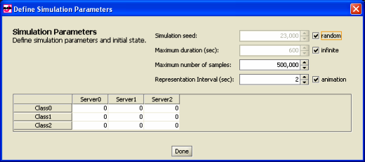
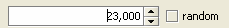
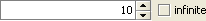
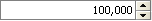
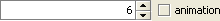
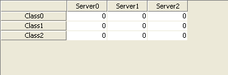

______________________________________
In the top section of this windows you can edit general simulation parameters.

Simulation Seed: 
The simulation seed is a number used by the simulation engine to generate pseudo-random numbers. As this numbers are pseudo-random, if you change the seed, you will obtain a different sequence of pseudo-random numbers. If a simulation is repeated using the same seed, the same sequence of pseudo-random numbers will be generated, thus leading to identical results.
The default value is random, which indicates that the simulation engine will pick a seed of its choice in a pseudo-random fashion each time it is started; deselect "random" and insert a number if you want a custom simulation.
Maximum duration (sec): 
It represents the maximum amount of time in seconds that the simulation will run. If the simulation ends before the maximum duration, the parameter is ignored and does not affect the results. The default value is "infinite" deselect it and specify the preferred maximum time if you do not want the simulation to run for a possibly very long time. In this case, the simulation stops when the time limit is reached, although a solution may not be available yet.
Maximum number of samples: 
It is the greatest number of samples for each index that JSIMGraph collects before ending the simulation. During a simulation, measurements can be stopped in case of:
- Success, if the results have reached the required Confidence Interval and the Max Relative Error
- Failure, if the simulation has analyzed the maximum number of samples but has not reached the required Confidence Interval or Max Relative Error
- Failure, if timeout occurs before successfully calculating the final results.
The default value for the maximum number of samples is 500,000; you may increase it (for a more accurate simulation) o decrease it (for a faster simulation).
Representation Interval (sec): 
This is the granularity at which results are plotted on the screen, i.e., the time interval before a new point is added to the graphs, as the simulation proceeds. A large value will make the simulation to proceed slower, as the graphs are updated less often. Small values will provide an impression of better "responsiveness" from the simulation, as graphs are updated more frequently. Animation checkbox is used to enable or disable queue animation during the simulation process.
Initial state is the model situation at time 0, typically expressed by the number of customers in each station before starting the simulation.
For closed customer classes, all jobs are initially allocated to their reference station. You can modify this allocation, as long as the total number of jobs remains the one defined in the Classes tab.
For open customer classes, it is possible to initialize each station with any desired number of jobs.
The following table represents an example of an initial state of a model with three stations and two classes.
